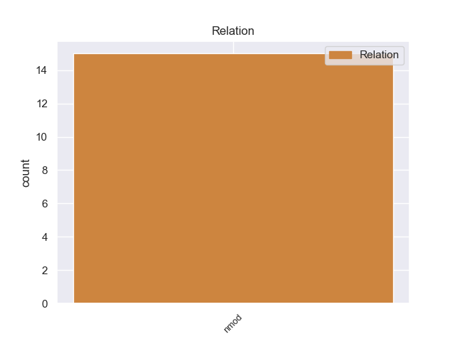
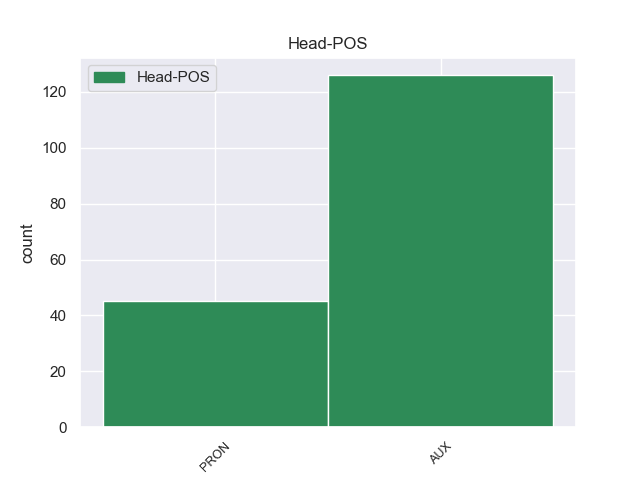
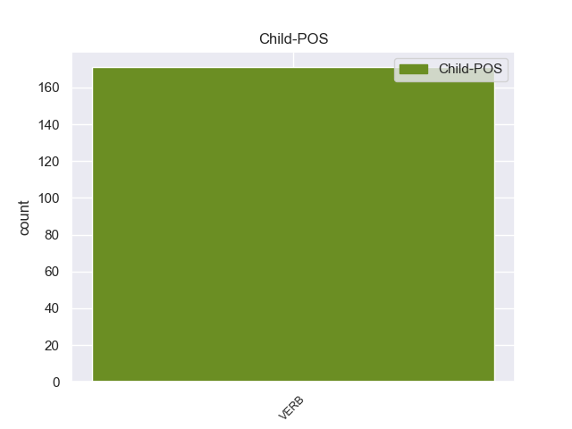

Distribution of features within this leaf



Agreement Rules sorted by frequency.
- When the dependent token is the nominal modifier(nmod) of the head token, and the head token is AUX
1 Σ _ _ _ _ 0 _ _ _
2 τις _ _ _ _ 0 _ _ _
3 4_Νοεμβρίου _ _ _ _ 0 _ _ _
4 ο _ _ _ _ 0 _ _ _
5 Βενιζέλος _ _ _ _ 0 _ _ _
6 αναχώρησε _ _ _ _ 0 _ _ _
7 για _ _ _ _ 0 _ _ _
8 το _ _ _ _ 0 _ _ _
9 Παρίσι _ _ _ _ 0 _ _ _
10 , _ _ _ _ 0 _ _ _
11 δηλώνοντας _ _ _ _ 0 _ _ _
12 ότι _ _ _ _ 0 _ _ _
13 αποσύρεται _ _ _ _ 0 _ _ _
14 από _ _ _ _ 0 _ _ _
15 την _ _ _ _ 0 _ _ _
16 ενεργό _ _ _ _ 0 _ _ _
17 πολιτική _ _ _ _ 0 _ _ _
18 και _ _ _ _ 0 _ _ _
19 σκοπεύει _ _ _ _ 0 _ _ _
20 να _ _ _ _ 0 _ _ _
21 ιδιωτεύσει _ _ _ _ 0 _ _ _
22 αλλά _ _ _ _ 0 _ _ _
23 αν _ _ _ _ 0 _ _ _
24 η _ _ _ _ 0 _ _ _
25 χώρα _ _ _ _ 0 _ _ _
26 ζητήσει _ _ _ _ 0 _ _ _
27 τις _ _ _ _ 0 _ _ _
28 υπηρεσίες _ _ _ _ 0 _ _ _
29 του _ _ _ _ 0 _ _ _
30 σ _ _ _ _ 0 _ _ _
31 το _ _ _ _ 0 _ _ _
32 εξωτερικό _ _ _ _ 0 _ _ _
33 , _ _ _ _ 0 _ _ _
34 θα _ _ _ _ 0 _ _ _
35 είναι είμαι AUX AUX Aspect=Imp|Mood=Ind|Number=Sing|Person=3|Tense=Pres|VerbForm=Fin|Voice=Pass 0 _ _ _
36 σ _ _ _ _ 0 _ _ _
37 τη _ _ _ _ 0 _ _ _
38 διάθεσή _ _ _ _ 0 _ _ _
39 της μου PRON PRON Case=Gen|Gender=Fem|Number=Sing|Person=3|Poss=Yes|PronType=Prs 35 nmod _ SpaceAfter=No
40 . _ _ _ _ 0 _ _ _
Disagree Examples:
1 Κατά _ _ _ _ 0 _ _ _
2 την _ _ _ _ 0 _ _ _
3 άποψή _ _ _ _ 0 _ _ _
4 μας _ _ _ _ 0 _ _ _
5 , _ _ _ _ 0 _ _ _
6 ο _ _ _ _ 0 _ _ _
7 σκοπός _ _ _ _ 0 _ _ _
8 δεν _ _ _ _ 0 _ _ _
9 είναι _ _ _ _ 0 _ _ _
10 να _ _ _ _ 0 _ _ _
11 υπάρχουν _ _ _ _ 0 _ _ _
12 διαρκώς _ _ _ _ 0 _ _ _
13 όλο _ _ _ _ 0 _ _ _
14 και _ _ _ _ 0 _ _ _
15 περισσότερες _ _ _ _ 0 _ _ _
16 οδηγίες _ _ _ _ 0 _ _ _
17 , _ _ _ _ 0 _ _ _
18 όλο _ _ _ _ 0 _ _ _
19 και _ _ _ _ 0 _ _ _
20 περισσότερες _ _ _ _ 0 _ _ _
21 λεπτομέρειες _ _ _ _ 0 _ _ _
22 , _ _ _ _ 0 _ _ _
23 αλλά _ _ _ _ 0 _ _ _
24 σκοπός _ _ _ _ 0 _ _ _
25 μας μου PRON PRON Case=Gen|Gender=Masc|Number=Plur|Person=1|Poss=Yes|PronType=Prs 26 nmod _ _
26 είναι είμαι AUX AUX Aspect=Imp|Mood=Ind|Number=Sing|Person=3|Tense=Pres|VerbForm=Fin|Voice=Pass 0 _ _ _
27 οι _ _ _ _ 0 _ _ _
28 χώρες _ _ _ _ 0 _ _ _
29 να _ _ _ _ 0 _ _ _
30 είναι _ _ _ _ 0 _ _ _
31 πρόθυμες _ _ _ _ 0 _ _ _
32 να _ _ _ _ 0 _ _ _
33 δραστηριοποιηθούν _ _ _ _ 0 _ _ _
34 από _ _ _ _ 0 _ _ _
35 κοινού _ _ _ _ 0 _ _ _
36 , _ _ _ _ 0 _ _ _
37 ούτως _ _ _ _ 0 _ _ _
38 ώστε _ _ _ _ 0 _ _ _
39 και _ _ _ _ 0 _ _ _
40 οι _ _ _ _ 0 _ _ _
41 εργοδότες _ _ _ _ 0 _ _ _
42 να _ _ _ _ 0 _ _ _
43 είναι _ _ _ _ 0 _ _ _
44 σε _ _ _ _ 0 _ _ _
45 θέση _ _ _ _ 0 _ _ _
46 να _ _ _ _ 0 _ _ _
47 προσφέρουν _ _ _ _ 0 _ _ _
48 σωστές _ _ _ _ 0 _ _ _
49 τιμές _ _ _ _ 0 _ _ _
50 και _ _ _ _ 0 _ _ _
51 να _ _ _ _ 0 _ _ _
52 μην _ _ _ _ 0 _ _ _
53 υποφέρουν _ _ _ _ 0 _ _ _
54 από _ _ _ _ 0 _ _ _
55 τις _ _ _ _ 0 _ _ _
56 συνέπειες _ _ _ _ 0 _ _ _
57 του _ _ _ _ 0 _ _ _
58 ντάμπιγκ _ _ _ _ 0 _ _ _
59 , _ _ _ _ 0 _ _ _
60 που _ _ _ _ 0 _ _ _
61 αναπτύσσεται _ _ _ _ 0 _ _ _
62 σ _ _ _ _ 0 _ _ _
63 τον _ _ _ _ 0 _ _ _
64 τομέα _ _ _ _ 0 _ _ _
65 αυτό _ _ _ _ 0 _ _ _
66 , _ _ _ _ 0 _ _ _
67 και _ _ _ _ 0 _ _ _
68 φυσικά _ _ _ _ 0 _ _ _
69 και _ _ _ _ 0 _ _ _
70 οι _ _ _ _ 0 _ _ _
71 εργαζόμενοι _ _ _ _ 0 _ _ _
72 να _ _ _ _ 0 _ _ _
73 μπορούν _ _ _ _ 0 _ _ _
74 να _ _ _ _ 0 _ _ _
75 εργασθούν _ _ _ _ 0 _ _ _
76 σε _ _ _ _ 0 _ _ _
77 σωστές _ _ _ _ 0 _ _ _
78 συνθήκες _ _ _ _ 0 _ _ _
79 . _ _ _ _ 0 _ _ _
1 Ευχόμαστε _ _ _ _ 0 _ _ _
2 να _ _ _ _ 0 _ _ _
3 μπορέσουν _ _ _ _ 0 _ _ _
4 να _ _ _ _ 0 _ _ _
5 συζητηθούν _ _ _ _ 0 _ _ _
6 εκεί _ _ _ _ 0 _ _ _
7 , _ _ _ _ 0 _ _ _
8 θεωρώντας _ _ _ _ 0 _ _ _
9 ότι _ _ _ _ 0 _ _ _
10 θα _ _ _ _ 0 _ _ _
11 έχουν _ _ _ _ 0 _ _ _
12 ήδη _ _ _ _ 0 _ _ _
13 πραγματοποιηθεί _ _ _ _ 0 _ _ _
14 , _ _ _ _ 0 _ _ _
15 οι _ _ _ _ 0 _ _ _
16 διαδικασίες _ _ _ _ 0 _ _ _
17 που _ _ _ _ 0 _ _ _
18 αναφέρθηκαν _ _ _ _ 0 _ _ _
19 προηγουμένως _ _ _ _ 0 _ _ _
20 και _ _ _ _ 0 _ _ _
21 να _ _ _ _ 0 _ _ _
22 μπορέσουμε _ _ _ _ 0 _ _ _
23 να _ _ _ _ 0 _ _ _
24 βρούμε _ _ _ _ 0 _ _ _
25 και _ _ _ _ 0 _ _ _
26 με _ _ _ _ 0 _ _ _
27 τους _ _ _ _ 0 _ _ _
28 πολίτες _ _ _ _ 0 _ _ _
29 της _ _ _ _ 0 _ _ _
30 Ερυθραίας _ _ _ _ 0 _ _ _
31 τον _ _ _ _ 0 _ _ _
32 τρόπο _ _ _ _ 0 _ _ _
33 να _ _ _ _ 0 _ _ _
34 ξεκινήσουμε _ _ _ _ 0 _ _ _
35 την _ _ _ _ 0 _ _ _
36 ειρηνευτική _ _ _ _ 0 _ _ _
37 διαδικασία _ _ _ _ 0 _ _ _
38 , _ _ _ _ 0 _ _ _
39 να _ _ _ _ 0 _ _ _
40 αποκατασταθεί _ _ _ _ 0 _ _ _
41 η _ _ _ _ 0 _ _ _
42 δημοκρατία _ _ _ _ 0 _ _ _
43 και _ _ _ _ 0 _ _ _
44 ιδιαίτερα _ _ _ _ 0 _ _ _
45 να _ _ _ _ 0 _ _ _
46 αποδοθούν _ _ _ _ 0 _ _ _
47 εκ _ _ _ _ 0 _ _ _
48 νέου _ _ _ _ 0 _ _ _
49 σ _ _ _ _ 0 _ _ _
50 τους _ _ _ _ 0 _ _ _
51 πολίτες _ _ _ _ 0 _ _ _
52 , _ _ _ _ 0 _ _ _
53 γυναίκες _ _ _ _ 0 _ _ _
54 , _ _ _ _ 0 _ _ _
55 άνδρες _ _ _ _ 0 _ _ _
56 και _ _ _ _ 0 _ _ _
57 παιδιά _ _ _ _ 0 _ _ _
58 , _ _ _ _ 0 _ _ _
59 συνθήκες _ _ _ _ 0 _ _ _
60 ζωής _ _ _ _ 0 _ _ _
61 αποδεκτές _ _ _ _ 0 _ _ _
62 , _ _ _ _ 0 _ _ _
63 συνθήκες _ _ _ _ 0 _ _ _
64 για _ _ _ _ 0 _ _ _
65 τις _ _ _ _ 0 _ _ _
66 οποίες _ _ _ _ 0 _ _ _
67 κανείς κανένας PRON PRON Case=Nom|Gender=Masc|Number=Sing|Person=3|PronType=Ind 0 _ _ _
68 μας μου PRON PRON Case=Gen|Gender=Masc|Number=Plur|Person=1|Poss=Yes|PronType=Prs 67 nmod _ _
69 δεν _ _ _ _ 0 _ _ _
70 θα _ _ _ _ 0 _ _ _
71 πρέπει _ _ _ _ 0 _ _ _
72 να _ _ _ _ 0 _ _ _
73 ντρέπεται _ _ _ _ 0 _ _ _
74 . _ _ _ _ 0 _ _ _
1 Επίσης _ _ _ _ 0 _ _ _
2 , _ _ _ _ 0 _ _ _
3 βάσει _ _ _ _ 0 _ _ _
4 της _ _ _ _ 0 _ _ _
5 Συνθήκης _ _ _ _ 0 _ _ _
6 ΕΚ _ _ _ _ 0 _ _ _
7 είναι είμαι AUX AUX Aspect=Imp|Mood=Ind|Number=Sing|Person=3|Tense=Pres|VerbForm=Fin|Voice=Pass 0 _ _ _
8 υποχρέωσή _ _ _ _ 0 _ _ _
9 μας μου PRON PRON Case=Gen|Gender=Masc|Number=Plur|Person=1|Poss=Yes|PronType=Prs 7 nmod _ _
10 να _ _ _ _ 0 _ _ _
11 ενσωματώσουμε _ _ _ _ 0 _ _ _
12 πληρέστερα _ _ _ _ 0 _ _ _
13 τους _ _ _ _ 0 _ _ _
14 συγκεκριμένους _ _ _ _ 0 _ _ _
15 τομείς _ _ _ _ 0 _ _ _
16 . _ _ _ _ 0 _ _ _
1 Τρίτον _ _ _ _ 0 _ _ _
2 , _ _ _ _ 0 _ _ _
3 πρέπει _ _ _ _ 0 _ _ _
4 να _ _ _ _ 0 _ _ _
5 καταφέρουμε _ _ _ _ 0 _ _ _
6 να _ _ _ _ 0 _ _ _
7 συμπεριληφθεί _ _ _ _ 0 _ _ _
8 οριστικά _ _ _ _ 0 _ _ _
9 ο _ _ _ _ 0 _ _ _
10 Νότιος _ _ _ _ 0 _ _ _
11 Καύκασος _ _ _ _ 0 _ _ _
12 σ _ _ _ _ 0 _ _ _
13 την _ _ _ _ 0 _ _ _
14 ημερήσια _ _ _ _ 0 _ _ _
15 διάταξη _ _ _ _ 0 _ _ _
16 των _ _ _ _ 0 _ _ _
17 σχέσεών _ _ _ _ 0 _ _ _
18 μας _ _ _ _ 0 _ _ _
19 με _ _ _ _ 0 _ _ _
20 τους _ _ _ _ 0 _ _ _
21 κυριότερους _ _ _ _ 0 _ _ _
22 συμμετέχοντες _ _ _ _ 0 _ _ _
23 που _ _ _ _ 0 _ _ _
24 ενδιαφέρονται _ _ _ _ 0 _ _ _
25 για _ _ _ _ 0 _ _ _
26 την _ _ _ _ 0 _ _ _
27 περιοχή _ _ _ _ 0 _ _ _
28 , _ _ _ _ 0 _ _ _
29 όπως _ _ _ _ 0 _ _ _
30 η _ _ _ _ 0 _ _ _
31 Ρωσία _ _ _ _ 0 _ _ _
32 , _ _ _ _ 0 _ _ _
33 η _ _ _ _ 0 _ _ _
34 Τουρκία _ _ _ _ 0 _ _ _
35 , _ _ _ _ 0 _ _ _
36 το _ _ _ _ 0 _ _ _
37 Ιράν _ _ _ _ 0 _ _ _
38 και _ _ _ _ 0 _ _ _
39 οι _ _ _ _ 0 _ _ _
40 Ηνωμένες _ _ _ _ 0 _ _ _
41 Πολιτείες _ _ _ _ 0 _ _ _
42 , _ _ _ _ 0 _ _ _
43 πράγμα _ _ _ _ 0 _ _ _
44 που _ _ _ _ 0 _ _ _
45 , _ _ _ _ 0 _ _ _
46 όπως _ _ _ _ 0 _ _ _
47 είπαν _ _ _ _ 0 _ _ _
48 μερικοί _ _ _ _ 0 _ _ _
49 από _ _ _ _ 0 _ _ _
50 σας _ _ _ _ 0 _ _ _
51 σ _ _ _ _ 0 _ _ _
52 τις _ _ _ _ 0 _ _ _
53 παρεμβάσεις _ _ _ _ 0 _ _ _
54 τους _ _ _ _ 0 _ _ _
55 , _ _ _ _ 0 _ _ _
56 είναι είμαι AUX AUX Aspect=Imp|Mood=Ind|Number=Sing|Person=3|Tense=Pres|VerbForm=Fin|Voice=Pass 0 _ _ _
57 και _ _ _ _ 0 _ _ _
58 προς _ _ _ _ 0 _ _ _
59 το _ _ _ _ 0 _ _ _
60 δικό _ _ _ _ 0 _ _ _
61 μας μου PRON PRON Case=Gen|Gender=Masc|Number=Plur|Person=1|Poss=Yes|PronType=Prs 56 nmod _ _
62 συμφέρον _ _ _ _ 0 _ _ _
63 , _ _ _ _ 0 _ _ _
64 μεταξύ _ _ _ _ 0 _ _ _
65 άλλων _ _ _ _ 0 _ _ _
66 για _ _ _ _ 0 _ _ _
67 λόγους _ _ _ _ 0 _ _ _
68 που _ _ _ _ 0 _ _ _
69 σχετίζονται _ _ _ _ 0 _ _ _
70 με _ _ _ _ 0 _ _ _
71 τον _ _ _ _ 0 _ _ _
72 ενεργειακό _ _ _ _ 0 _ _ _
73 εφοδιασμό _ _ _ _ 0 _ _ _
74 . _ _ _ _ 0 _ _ _
1 Σκοπός _ _ _ _ 0 _ _ _
2 μας μου PRON PRON Case=Gen|Gender=Masc|Number=Plur|Person=1|Poss=Yes|PronType=Prs 3 nmod _ _
3 είναι είμαι AUX AUX Aspect=Imp|Mood=Ind|Number=Sing|Person=3|Tense=Pres|VerbForm=Fin|Voice=Pass 0 _ _ _
4 η _ _ _ _ 0 _ _ _
5 κατάρτιση _ _ _ _ 0 _ _ _
6 να _ _ _ _ 0 _ _ _
7 είναι _ _ _ _ 0 _ _ _
8 παντού _ _ _ _ 0 _ _ _
9 η _ _ _ _ 0 _ _ _
10 ίδια _ _ _ _ 0 _ _ _
11 . _ _ _ _ 0 _ _ _